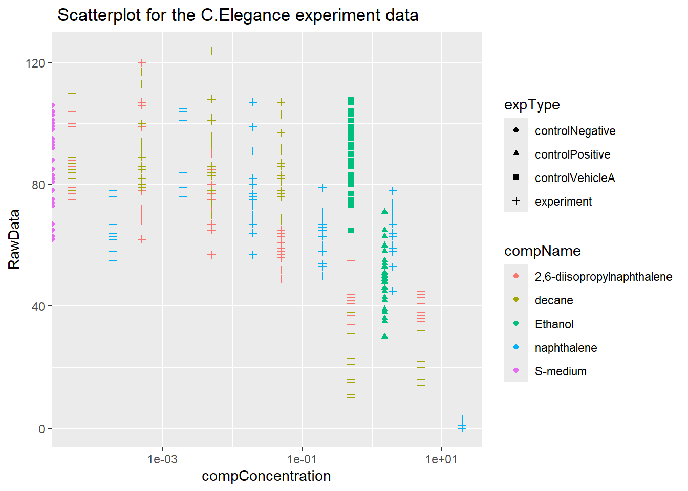

Chapter 5 Reproducible research
C. elegans plate experiment
Open the file in R, using the {readxl} package.
Inspect the data types of columns RawData, compName and compConcentration. What types would you expect from the experimental description above. Have the data types been correctly assigned during the importing of the data into R
Inspect the data types of columns RawData, compName and compConcentration. What types would you expect from the experimental description above. Have the data types been correctly assigned during the importing of the data into R?
library("readxl")
library("tidyverse")
file <- read_excel("data/les3/CE.LIQ.FLOW.062_Tidydata.xlsx")
colnames(file)## [1] "plateRow" "plateColumn" "vialNr"
## [4] "dropCode" "expType" "expReplicate"
## [7] "expName" "expDate" "expResearcher"
## [10] "expTime" "expUnit" "expVolumeCounted"
## [13] "RawData" "compCASRN" "compName"
## [16] "compConcentration" "compUnit" "compDelivery"
## [19] "compVehicle" "elegansStrain" "elegansInput"
## [22] "bacterialStrain" "bacterialTreatment" "bacterialOD600"
## [25] "bacterialConcX" "bacterialVolume" "bacterialVolUnit"
## [28] "incubationVial" "incubationVolume" "incubationUnit"
## [31] "incubationMethod" "incubationRPM" "bubble"
## [34] "incubateTemperature"## # A tibble: 6 × 34
## plateRow plateColumn vialNr dropCode expType expReplicate expName
## <lgl> <lgl> <dbl> <chr> <chr> <dbl> <chr>
## 1 NA NA 1 a experiment 3 CE.LIQ.FLOW.062
## 2 NA NA 1 b experiment 3 CE.LIQ.FLOW.062
## 3 NA NA 1 c experiment 3 CE.LIQ.FLOW.062
## 4 NA NA 1 d experiment 3 CE.LIQ.FLOW.062
## 5 NA NA 1 e experiment 3 CE.LIQ.FLOW.062
## 6 NA NA 2 a experiment 3 CE.LIQ.FLOW.062
## # ℹ 27 more variables: expDate <dttm>, expResearcher <chr>, expTime <dbl>,
## # expUnit <chr>, expVolumeCounted <dbl>, RawData <dbl>, compCASRN <chr>,
## # compName <chr>, compConcentration <chr>, compUnit <chr>,
## # compDelivery <chr>, compVehicle <chr>, elegansStrain <chr>,
## # elegansInput <dbl>, bacterialStrain <chr>, bacterialTreatment <chr>,
## # bacterialOD600 <dbl>, bacterialConcX <dbl>, bacterialVolume <dbl>,
## # bacterialVolUnit <chr>, incubationVial <chr>, incubationVolume <dbl>, …Concentration column is a string, It needs to be converted to numeric
## Warning: NAs introduced by coercionCreate a graph displaying a scatterplot for the CE.LIQ.FLOW.062_Tidydata.xlsx data, for the different compounds and the varying concentrations. Put the compConcentration on the x-axis, the DataRaw counts on the y-axis and assign a colour to each level in compName. Assign a different symbol (shape =) to each level in the expType variable. Try fixing the labels of the x-axis so that we can read them.
When creating the plot under C), what happened with the ordering of the x-axis labels. Explain why this happens. Look at the data-type of the compConcentration column in the data again to find a clue.
Correct this and than look at the graph again. Use a log10 transformation on the x-axis to get a clear graph. Also, add a bit of jitter to the points in the graph so that points are not overlapping (Google “ggplot jitter” if needed).ggplot(file, aes(x = compConcentration, y = RawData, colour=compName, shape=expType)) +
geom_point()+
scale_x_continuous( trans= 'log10')+
ggtitle(" Scatterplot for the C.Elegance experiment data") 
Fill in: (G) The positive control for this experiments is ….. (H) The negative control for this experiment is …..
Think about how you would analyze this experiment to learn whether there is indeed an effect of different concentrations on offspring count and whether the different compounds have a different curve (IC50). Write down you analysis as a step-wise plan.
Normalize the data for the controlNegative in such a way that the mean value for controlNegative is exactly equal to 1 and that all other values are expressed as a fraction thereof. Rerun your graphs with the normalized data.
Why would you want to take the step under J?compNamecontrolPositive<- file$compName[file$expType == "controlPositive"][1]
compNamecontrolNegative <- file$compName[file$expType == "controlNegative"][1] The positive control for this experiments is Ethanol
The negative control for this experiment is S-medium
controlNegative <- file$RawData[file$expType=="controlNegative"]
controlNegative_scaled <- scale(controlNegative, center = 1, scale = TRUE)
controlNegative_scaled## [,1]
## [1,] 1.0420913
## [2,] 1.1451552
## [3,] 1.2024130
## [4,] 1.1795099
## [5,] 1.0535428
## [6,] 0.8245118
## [7,] 1.0649944
## [8,] 1.1795099
## [9,] 0.8817695
## [10,] 1.1680583
## [11,] 0.7099962
## [12,] 0.9619304
## [13,] 0.6985447
## [14,] 0.8474149
## [15,] 0.9275757
## [16,] 0.9962851
## [17,] 0.9619304
## [18,] 0.7558025
## [19,] 0.7328994
## [20,] 0.9161242
## [21,] 0.9619304
## [22,] 0.9390273
## [23,] 0.8359633
## [24,] 0.8474149
## [25,] 0.9619304
## [26,] 1.0764459
## [27,] 1.1222521
## [28,] 1.1337037
## [29,] 1.1108006
## [30,] 0.9275757
## attr(,"scaled:center")
## [1] 1
## attr(,"scaled:scale")
## [1] 87.32441## [1] 1mean scaled control Negatieve : 1
You would take this step to be able to analyse to analyze numerical values with different range of values and to be able to set them in one plot
IC50 curve steps:
Create a scatter plot of your data, with the x-axis representing the drug concentration and the y-axis representing the percentage of inhibition.
Add a trendline to the scatter plot by right-clicking on a data point and selecting “Add Trendline.”
In the Trendline options, select “Logarithmic” as the Trendline type.
Check the box next to “Display Equation on the chart” and “Display R-squared value on chart.”
The equation that appears on the chart represents the logarithmic curve that fits your data. Use this equation to calculate the IC50 value by solving for the x-value when the y-value equals 50%.
To do this, set the equation equal to 50 and solve for x. You can use Excel’s solver function or simply trial-and-error to find the x-value that corresponds to a y-value of 50%.
The x-value you find is the IC50 value for your drug.